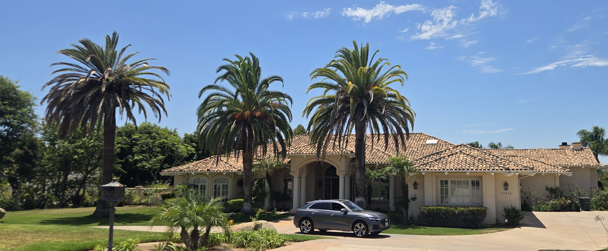

San Diego Palm Protection helps property owners understand what is happening with mature palms, document changes, decide whether preservation is practical, coordinate removal when necessary, and plan thoughtful replacements.
Preserve when practical. Coordinate removal when necessary. Replace thoughtfully.
SDPP is preservation-minded, but practical: document first, preserve when possible, coordinate removal when necessary, and replace thoughtfully.
Mature palms do not all need the same next step. Some need documentation. Some need monitoring. Some may be preservation candidates. Others may be headed toward removal or replacement planning. SDPP helps property owners organize the decision before acting too quickly.
Use SDPP's free checklist to document crown changes, stress signs, and possible SAPW warning signs before assuming a diagnosis.
Use the CIDP Risk ChecklistLearn what SAPW is, why mature Canary Island date palms are a concern in Southern California, and what signs deserve closer attention.
Learn About SAPWFor properties with valuable palms, SDPP offers preservation-minded care planning, seasonal monitoring, and long-term palm stewardship.
Explore Palm CareWhen a mature palm may no longer be practical to preserve, SDPP helps organize documentation, contractor questions, removal coordination, and thoughtful replacement planning.
Removal & Replacement PlanningNot every declining palm has South American palm weevil - but mature Canary Island date palms deserve careful documentation when the crown begins to change. Use SDPP's free checklist to organize what you are seeing, what photos to take, and whether the next step may be monitoring, preservation planning, removal coordination, or replacement planning.
Use the Free ChecklistClick below to request a palm assessment or property visit. The email option opens a pre-filled message so you are notified directly at sandiegopalmprotection@gmail.com.
Call or Text 262-492-3135
Email: sandiegopalmprotection@gmail.com
You can also find San Diego Palm Protection on Google. View Google Business Profile
San Diego Palm Protection intentionally maintains a limited roster of ongoing quarterly care clients to ensure direct owner involvement, consistent stewardship, and a high level of personalized service.
San Diego Palm Protection helps homeowners preserve valuable palms through recurring quarterly care, preventative treatment, proper fertilization, and long-term palm stewardship.


Specialized quarterly care designed to protect mature palms and preserve the beauty and value of your landscape.
Focused exclusively on mature palms — not general landscaping.
Helping preserve the health, beauty, and long-term value of mature palms.
Scheduled fertilization, preventative treatment when appropriate, and ongoing monitoring.
Every treatment is personally performed by the owner — no rotating crews.
Consistent care so you can feel confident your palms are being looked after year-round.
Palm decisions are clearer when the process starts with observation and ends with a thoughtful plan.
Start with clear photos, visible condition notes, crown changes, and surrounding site context.
Consider the palm species, stress signs, SAPW awareness, neighborhood context, and whether the change is new or worsening.
The next step may be monitoring, preservation planning, removal coordination, or replacement planning.
For valuable palms and mature landscapes, SDPP helps property owners think beyond one visit and plan for long-term palm value.
Documentation, SAPW awareness, ongoing palm care, removal coordination, sourcing, replacement planning, and local field notes for mature San Diego palms.
San Diego Palm Protection is documenting mature Canary Island Date Palms and local South American Palm Weevil observations in Old Escondido as part of a neighborhood awareness and preservation effort.
Learn About the InitiativeSan Diego Palm Protection is intentionally focused: a small, owner-operated client roster for homeowners who want their mature palms consistently protected, monitored, and cared for over the long term. By keeping the roster intentionally limited, every property receives direct owner attention and consistent care year-round.
Preventative treatment, SAPW awareness, and early monitoring before expensive removal becomes the only option.
Quarterly fertilization, watering-in, and health observation to keep valuable palms looking strong year-round.
Sourcing, logistics, and specimen palm guidance for homeowners who want to elevate their landscape over time.
Follow local palm protection in action: photos from our own North County palms, seasonal observations, treatment, and field notes.
View the Palm JournalSend the full palm, crown close-up, trunk/base, and a few notes about your city or neighborhood. Photos are a starting point, not a diagnosis.
📞 Call or Text 262-492-3135
Email: sandiegopalmprotection@gmail.com
You can also find San Diego Palm Protection on Google. View Google Business Profile